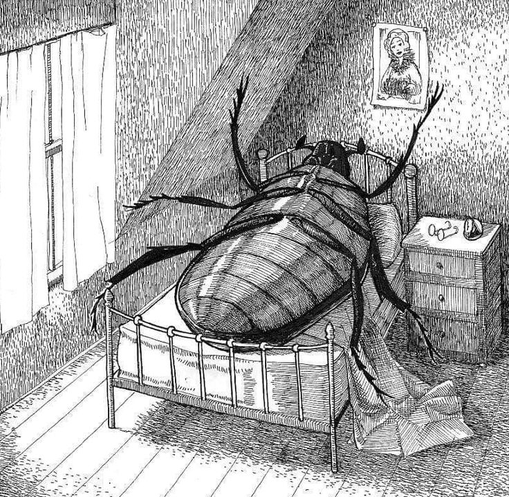
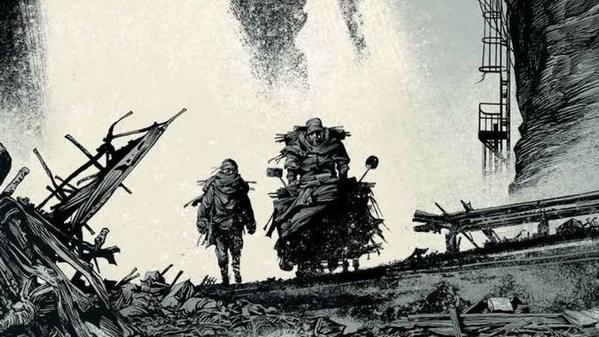
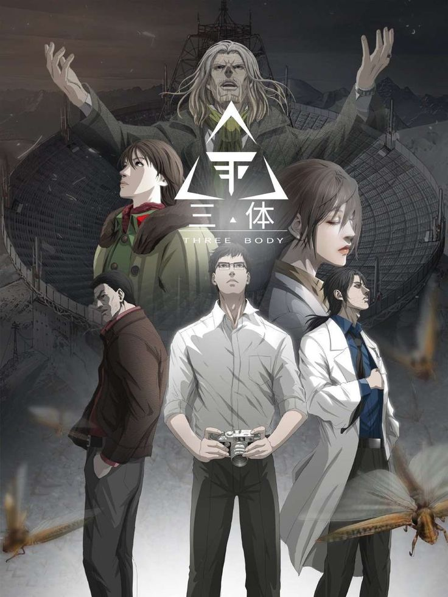
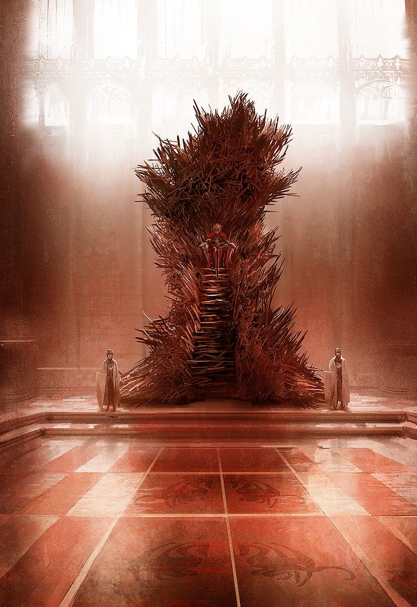
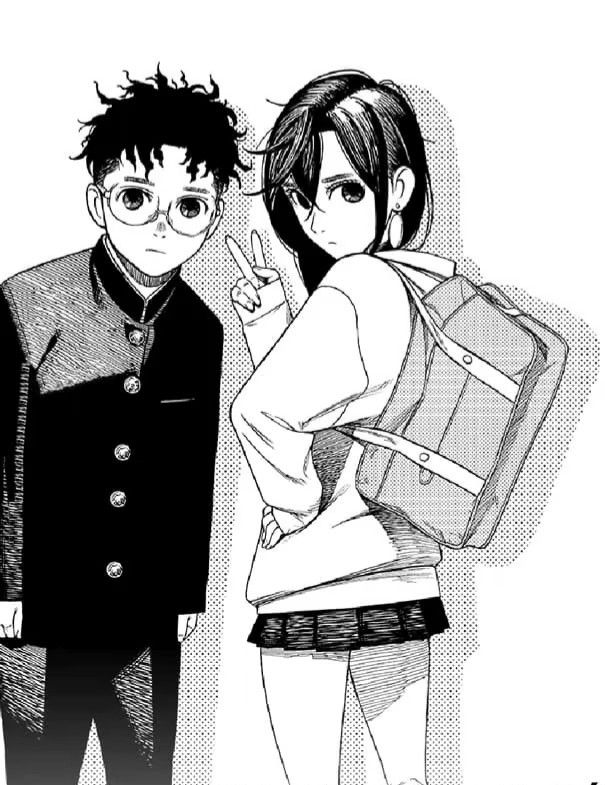
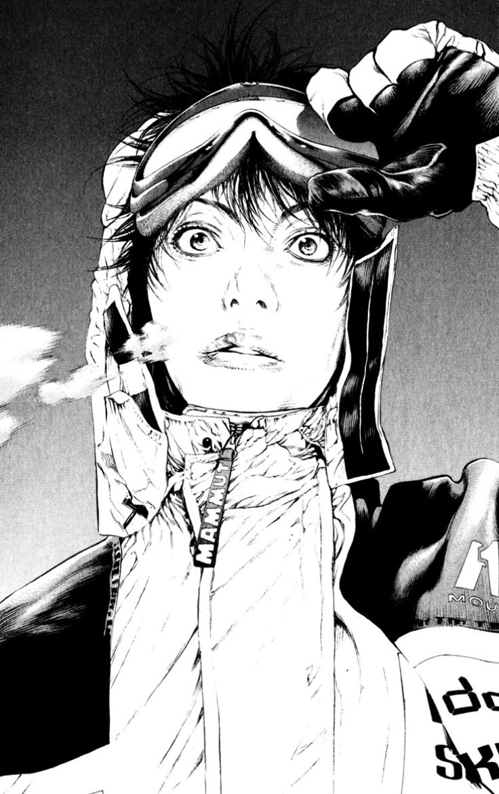
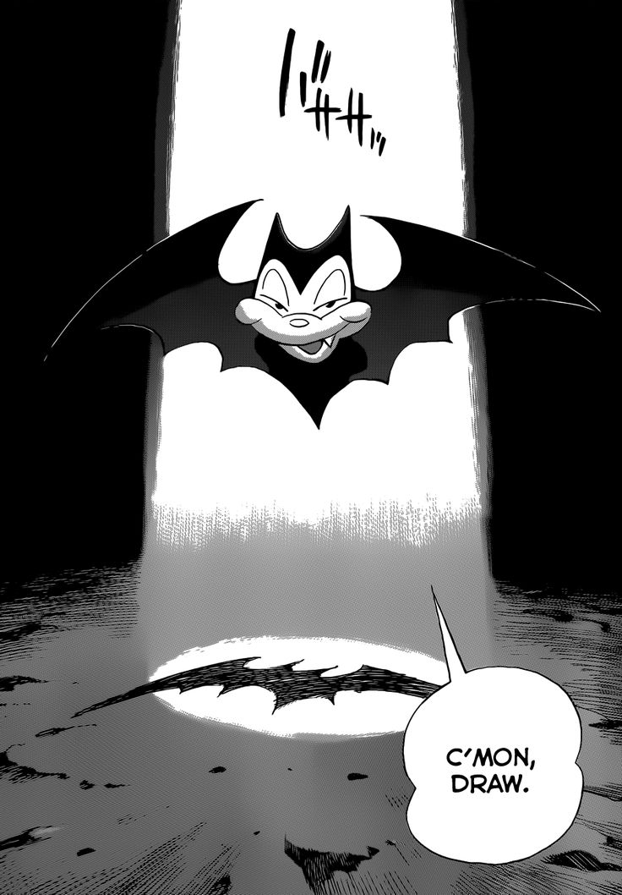
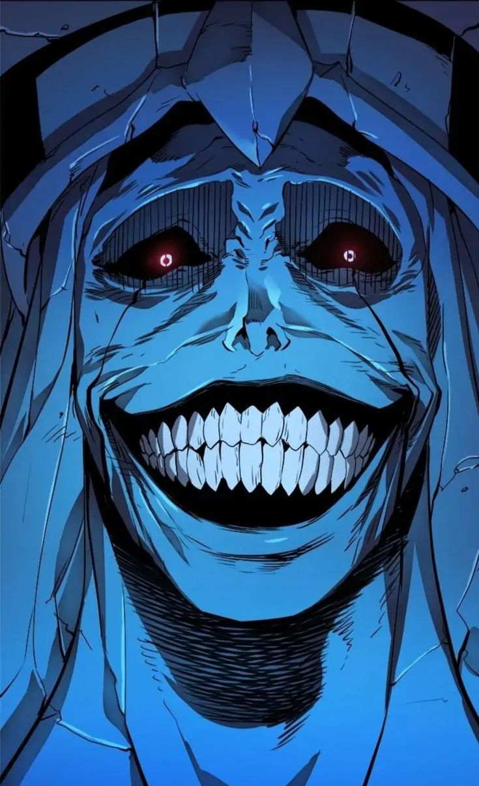

Lo que he leido en 2025
En esta sección podrán ver todo lo que he leído en este maravilloso 2025. La idea es ir actualizando la página conforme siga descubriendo nuevas lecturas. Además, quiero aclarar que las sagas de libros las contaré como una sola entrada, para evitar llenar la página con múltiples cuadros de una misma saga y, de paso, evitar posibles spoilers. :D

La Metamorfosis
Frank Kafka
“La metamorfosis” narra de forma magistral la transformación de Gregorio Samsa de comerciante a un monstruoso insecto. Samsa primero cree que es un sueño, pero poco a poco va descubriendo que la pesadilla es real y su transformación en animal es un hecho que afecta a su trabajo y a su relación con su familia.

La carretera
Cormac McCarthy
En un mundo apocalíptico donde llueve ceniza, un hombre y un chico cruzan a pie el territorio norteamericano en dirección al sur. El hambre es mucho más que una preocupación diaria: es la medida de todas las cosas, y las bandas de caníbales asolan el país convertido en un yermo donde solo la barbarie ha echado raíces.

El Problema de los Tres Cuerpos
Cixin Liu
El problema de los tres cuerpos sigue a Ye Wenjie, una astrofísica china que, tras la tragedia personal durante la Revolución Cultural, envía un mensaje al planeta Trisolaris, pidiendo ayuda. Trisolaris, un planeta inestable en el sistema de Alfa Centauri, lucha por sobrevivir y considera la migración interestelar. El mensaje de la Tierra es recibido y responde un astrónomo pacifista, iniciando un contacto que marcará el destino de ambas civilizaciones.

Cancion de hielo y fuego
George RR Martin
Canción de Hielo y Fuego sigue la lucha por el Trono de Hierro en los Siete Reinos de Poniente, un continente dividido por facciones que buscan poder tras la muerte del rey Robert Baratheon. Tras la caída de la dinastía Targaryen, diversos aspirantes al trono se enfrentan en la Guerra de los Cinco Reyes. Paralelamente, en el norte, Jon Nieve, miembro de la Guardia de la Noche, debe hacer frente a una amenaza sobrenatural más allá del Muro. En Essos, Daenerys Targaryen, última heredera de los Targaryen, lucha por recuperar el trono con el poder de sus dragones. La saga entrelaza estos tres arcos en una historia que explora el destino, el poder y las antiguas profecías, como la enigmática "canción de hielo y fuego"

DanDaDan
Yukinobu Tatsu
Momo Ayase, una estudiante que cree en fantasmas, y su compañero Okarun, que cree en extraterrestres, hacen una apuesta sobre lo oculto y lo extraterrestre. Momo es secuestrada por extraterrestres y desarrolla habilidades psíquicas, mientras Okarun es poseído por un espíritu. Juntos luchan contra seres sobrenaturales. A lo largo de la historia, también enfrentan la creciente tensión romántica entre ellos y luchan para deshacer una maldición que afecta a Momo, borrando su presencia y reduciendo su tamaño.

The Climber
Shinichi Sakamoto - Jirō Nitta
Los eventos tratan sobre el solitario y de apariencia lúgubre Buntarō Mori, quién descubre su pasión por escalar. La historia progresa hasta su adultez, mostrando sus diferentes situaciones cotidianas, su depresión, momentos de soledad y sus sueños de poder escalar la zona más difícil del mundo, el lado este del K2

BillyBat
Naoki Urasawa
La historia se desarrolla en 1949 y sigue a Kevin Yamagata, un dibujante japonés-estadounidense que crea el cómic de detectives Billy Bat. Al descubrir que su personaje podría ser una copia de uno visto durante su servicio en Japón, viaja allí para obtener el permiso de su creador original. Sin embargo, al llegar, se ve envuelto en un misterio de asesinato, encubrimiento y una profecía que conecta todos los eventos con Billy Bat. A medida que avanza, Kevin descubre que Billy Bat está vinculado a un antiguo pergamino, el cual, según la leyenda, confiere el dominio del mundo a quien lo posea.

Solo Leveling
Chu-Gong
Un cazador muy débil llamado Sung Jinwoo sobrevive a una mision que acabo con todo su grupo, luego un programa misterioso llamado Sistema lo elige como su único jugador y, a su vez, le da la sorprendente habilidad de subir de nivel sin límites